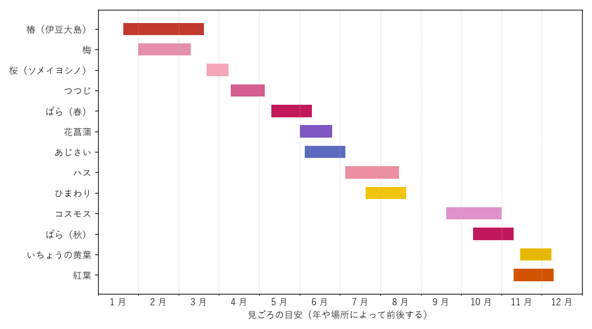

11. 季節の楽しみ
東京の名所は、季節によって大きく表情を変える。同じ庭園でも、梅の季節、新緑の季節、紅葉の季節では見どころがまったく異なる。この章では、季節ごとの花と紅葉の見ごろ、主な年中行事と、それらを楽しめる名所をまとめる。
11.1. 花と紅葉の見ごろ
都内の主な花と紅葉の見ごろの目安を次の図に示す。見ごろは、その年の気温や場所によって 1〜2 週間ほど前後する。山間部の高尾山や奥多摩は都心より気温が低いため、桜は遅く、紅葉は早く見ごろを迎える。

図: 都内の主な花と紅葉の見ごろの目安
それぞれの花と紅葉を楽しめる主な名所を次の表に示す。
花・紅葉 |
見ごろの目安 |
主な名所 |
|---|---|---|
椿 |
1 月下旬〜3 月 |
|
梅 |
2 月〜3 月上旬 |
|
桜 |
3 月下旬〜4 月上旬 |
北の丸公園と千鳥ヶ淵、上野恩賜公園、隅田川の水辺と橋、新宿御苑、六義園（しだれ桜）、井の頭恩賜公園、谷中・根津・千駄木（谷中霊園） |
つつじ |
4 月中旬〜5 月上旬 |
|
ばら |
5 月中旬〜6 月上旬、10 月中旬〜11 月上旬 |
|
花菖蒲 |
6 月 |
|
ハス |
7 月〜8 月中旬 |
上野恩賜公園（不忍池） |
ひまわり、コスモス |
7 月下旬〜8 月、9 月下旬〜10 月 |
|
いちょうの黄葉 |
11 月中旬〜12 月上旬 |
|
紅葉 |
11 月中旬〜12 月上旬 |
見ごろの情報は、各名所の公式サイトや、東京都公園協会の公式サイトで随時発表される。出かける直前に確認すると、見ごろを逃さずに済む。
11.2. 季節ごとの楽しみ方
- 春（3 月〜5 月）
梅に始まり、桜、つつじ、ばらと花が次々に咲く、名所巡りに最も適した季節である。特に桜の時期は、どの名所も大変に混雑する。千鳥ヶ淵や上野恩賜公園などの有名な名所は平日の朝に訪れ、週末は比較的空いている新宿御苑（酒類の持ち込みが禁止されている）や、谷中霊園などを選ぶとよい。
- 夏（6 月〜8 月）
梅雨の時期は、花菖蒲とあじさいが見ごろを迎える。雨の日の庭園は人が少なく、しっとりとした景色を楽しめる。真夏は暑さが厳しいため、屋外の名所は朝の涼しい時間に訪れ、日中は博物館や美術館などの屋内で過ごすとよい。山間部の御岳山や奥多摩は都心より涼しく、避暑にも向いている。
- 秋（9 月〜11 月）
暑さが和らぐ 10 月から、再び屋外の名所巡りに適した季節となる。コスモス、秋のばらに続き、11 月には紅葉といちょうの黄葉が始まる。紅葉は高尾山などの山間部から始まり、都心の庭園は 11 月下旬から 12 月上旬に見ごろを迎える。
- 冬（12 月〜2 月）
空気が乾燥して澄むため、展望施設や高尾山の山頂から富士山がよく見える季節である。花は少ないが、冬枯れの庭園では、木々の枝ぶりや石の配置など、庭の骨格をよく観察できる。
11.3. 年中行事
東京の寺社では、江戸時代から続く祭りや縁日が今も盛んに行われている。主な行事を次の表に示す。日程は年によって変わるため、出かける前に各寺社の公式サイトで確認する。
時期 |
行事 |
内容と場所 |
|---|---|---|
1 月 1〜3 日 |
初詣 |
|
2 月 3 日ごろ |
節分会 |
|
3 月 3〜4 日 |
だるま市 |
深大寺の境内にだるまを売る店が並ぶ。 |
5 月中旬（第 3 日曜日とその前の 2 日間） |
三社祭 |
浅草神社の祭礼。100 基を超える町内の神輿が浅草の町を練り歩く（浅草寺）。 |
5 月中旬（奇数年） |
神田祭 |
神田明神の祭礼。奇数年に本祭が行われ、神輿や山車の行列が神田、日本橋、秋葉原を巡る。次の本祭は 2027 年の予定である。 |
6 月中旬（偶数年） |
山王祭 |
赤坂の日枝神社の祭礼。偶数年に、平安時代の装束をまとった行列が皇居の周辺や銀座、日本橋を巡る神幸祭が行われる。 |
7 月 9〜10 日 |
ほおずき市 |
浅草寺の境内にほおずきを売る店が並ぶ。この日に参拝すると 4 万 6 千日分のご利益があるとされる。 |
7 月最終土曜日 |
隅田川花火大会 |
江戸時代の両国の川開きの花火を起源とする花火大会（隅田川の水辺と橋）。 |
8 月中旬 |
深川八幡祭り |
江東区の富岡八幡宮の祭礼。沿道から神輿に水を掛けることから「水掛け祭り」とも呼ばれる。3 年に 1 度の本祭では多くの神輿が勢ぞろいする。 |
10 月下旬〜11 月初め |
神田古本まつり |
神保町古書店街の靖国通りの歩道に本棚が並ぶ。 |
11 月の酉の日 |
酉の市 |
浅草の鷲（おおとり）神社などで、商売繁盛を願う縁起物の熊手を売る店が並ぶ。 |
12 月 14 日 |
義士祭 |
泉岳寺で、赤穂義士の討ち入りの日に合わせて開かれる。 |
12 月 17〜19 日 |
羽子板市 |
浅草寺の境内に、歌舞伎役者などを描いた押絵の羽子板を売る店が並ぶ。 |
神田祭、山王祭、深川八幡祭りは、合わせて「江戸三大祭り」と呼ばれる。祭りの日は周辺の道路で交通規制が行われ、駅も大変に混雑する。神輿の渡御を見物する際は、係員の指示に従い、行列の進行を妨げないようにする。